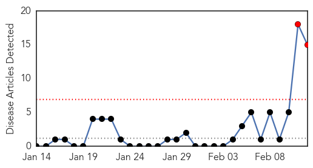
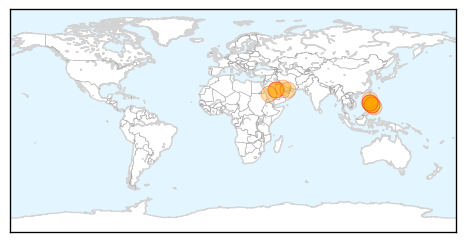

West Nile Virus
30-Day Web Trend
1 alerts, 0 warnings

30-Day Twitter Trend
0 alerts, 0 warnings

Article Locations


Article Confidences

Top Articles:
-
No articles found for Feb 12, 2015
Top Tweets:
-
No tweets found for Feb 12, 2015
MERS
30-Day Web Trend
2 alerts, 0 warnings

30-Day Twitter Trend
4 alerts, 0 warnings

Article Locations

Article Confidences

Top Articles:
- 0.999
- MERS-CoV in the Philippines
- 0.999
- Filipino nurse from Saudi Arabia tests positive for MERS virus
- 0.999
- Filipino nurse from Saudi Arabia tests positive for Mers - Emirates 24
- 0.998
- WHO warns MERS 'will spread in households'
- 0.997
- Abu Dhabi man dies after contracting Mers coronavirus
- 0.997
- MERS claims 2 more lives
- 0.997
- Palace asks for public vigilance after report of country’s first MERS-CoV infection
- 0.994
- Philippines steps up prevention after MERS-CoV case confirmed
- 0.994
- Filipina Nurse Is First Case Of MERS-Cov Disease – DOH
- 0.992
- Garin: Filipina nurse with MERS-CoV pregnant
- 0.986
- Abu Dhabi Expat Dies Of MERS
- 0.983
- Returning OFWS urged to fill in checklist honestly
- 0.959
- Cebu News, The Freeman Sections, The Freeman
- 0.952
- Philippine government intensifies efforts to prevent spread of MERS-CoV
- 0.911
- Nurse with MERS-CoV pregnant; DOH tracks 63 of 225 co-passengers, tests 49 of her kin
Top Tweets:
-
No tweets found for Feb 12, 2015